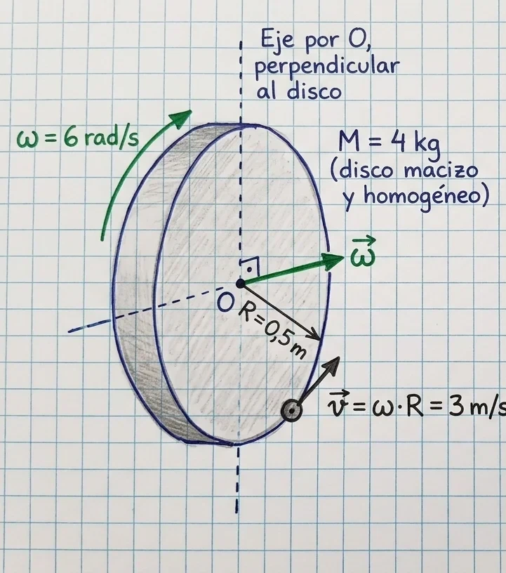

PEC 2 (módulo 2, temas 6-11) resuelta
Cinco preguntas tipo test, resueltas como en el examen: datos, fórmulas, cuenta paso a paso y comprobación de las otras opciones.
Pregunta 1
Varilla homogénea de 3 kg y 2 m que gira alrededor de un eje perpendicular que pasa por un extremo. ¿Momento de inercia?
- $M=3\ \text{kg}$, $L=2\ \text{m}$
- Eje perpendicular a la varilla por un extremo
- Varilla, eje por el extremo: $I=\tfrac13 ML^2$
- (Por el centro sería $\tfrac1{12}ML^2$; se pasa de uno a otro con Steiner: $I=I_{cm}+Md^2$)
- Fórmula para un extremo:$$I=\frac13 ML^2$$El eje pasa por un extremo, no por el centro.
- Sustituimos:$$I=\frac13\cdot 3\cdot 2^2$$
- Calculamos:$$I=\frac13\cdot 3\cdot 4=\frac{12}{3}=\mathbf{4\ \text{kg}\cdot\text{m}^2}$$
- Comprobación con Steiner ($d=L/2=1$ m):$$I=\frac1{12}\cdot3\cdot4+3\cdot1^2=1+3=4\ \text{kg}\cdot\text{m}^2$$
Las otras: a) 3 sería $ML^2/4$ (mal); b) 6 sería $ML^2/2$; d) 1 es solo el valor respecto al centro, $ML^2/12$.
Pregunta 2
Disco macizo homogéneo de 4 kg y 0,5 m de radio que gira alrededor de un eje por su centro, perpendicular a su superficie, con ω = 6 rad/s. ¿Energía cinética de rotación?
- $M=4\ \text{kg}$, $R=0{,}5\ \text{m}$, $\omega=6\ \text{rad/s}$

- Disco macizo, eje por el centro: $I=\tfrac12 MR^2$
- Energía de rotación: $K=\tfrac12 I\omega^2$
- Momento de inercia:$$I=\frac12 MR^2=\frac12\cdot4\cdot0{,}5^2=\frac12\cdot4\cdot0{,}25=0{,}5\ \text{kg}\cdot\text{m}^2$$Primero I, porque K lo necesita.
- Energía:$$K=\frac12 I\omega^2=\frac12\cdot0{,}5\cdot6^2=\frac12\cdot0{,}5\cdot36$$
- Resultado:$$K=0{,}25\cdot36=\mathbf{9\ \text{J}}$$
Las otras: 4,5 J sale de $\tfrac14I\omega^2$ (un ½ de más); 18 J es $\tfrac12MR^2\omega^2$ con $I=MR^2$ (fórmula del aro); 36 J es $MR^2\omega^2$ (aro y sin el ½).
Pregunta 3
Un bloque se desliza sobre una superficie horizontal. Peso, normal y rozamiento: ¿cuál es el origen de estas interacciones?
- Fuerzas: peso $\vec P$, normal $\vec N$, rozamiento $\vec f$
- Interacciones fundamentales: gravitatoria, electromagnética, nuclear fuerte y débil
- Peso: es la atracción de la Tierra sobre el bloque, $P=mg$ → gravitatoria.
- Normal: la superficie se deforma ligeramente y sus átomos repelen a los del bloque (contacto) → electromagnética.Toda fuerza de contacto es, a nivel microscópico, repulsión eléctrica entre átomos.
- Rozamiento: también es contacto entre las superficies (enlaces y repulsión entre átomos) → electromagnética.
- La nuclear fuerte actúa solo dentro del núcleo (~$10^{-15}$ m), no entre cuerpos macroscópicos.
Descartadas: a) y b) atribuyen a la gravedad el contacto; d) la fuerza nuclear fuerte no interviene.
Pregunta 4
Un motor eleva una carga de 20 kg con velocidad constante de 1,5 m/s. ¿Potencia mecánica del motor? ($g=9{,}8\ \text{m/s}^2$)
- $m=20\ \text{kg}$, $v=1{,}5\ \text{m/s}$ (constante), $g=9{,}8\ \text{m/s}^2$
- Velocidad constante ⇒ $a=0$ ⇒ $\sum F=0$: $F=mg$
- Potencia: $P=\vec F\cdot\vec v=Fv$ (fuerza y velocidad en el mismo sentido)
- Segunda ley con $a=0$:$$F-mg=0\ \Rightarrow\ F=mg$$Sin aceleración, el motor solo equilibra el peso.
- Fuerza:$$F=20\cdot9{,}8=196\ \text{N}$$
- Potencia:$$P=Fv=196\cdot1{,}5$$
- Resultado:$$P=\mathbf{294\ \text{W}}$$
Las otras: 196 W es $mg$ numéricamente, sin multiplicar por $v$ (y en W no tiene sentido); 392 W es $2mg$; 147 W es $\tfrac12mgv$ (un ½ que sobra: no hay energía cinética que cambie).
Pregunta 5
Giróscopo con $I=0{,}002\ \text{kg}\cdot\text{m}^2$ respecto a su eje, $\omega=100\ \text{rad/s}$, centro de masas a 0,20 m del apoyo, $m=0{,}5$ kg, eje horizontal, precesión estacionaria. ¿Velocidad angular de precesión? ($g=9{,}8$)
- $I=0{,}002\ \text{kg}\cdot\text{m}^2$, $\omega=100\ \text{rad/s}$
- $r=0{,}20\ \text{m}$, $m=0{,}5\ \text{kg}$, $g=9{,}8\ \text{m/s}^2$
- Momento del peso respecto al apoyo: $\tau=mgr$
- Momento angular de espín: $L=I\omega$
- Precesión estacionaria: $\tau=\Omega L\ \Rightarrow\ \Omega=\dfrac{mgr}{I\omega}$
- Torque del peso:$$\tau=mgr=0{,}5\cdot9{,}8\cdot0{,}20=0{,}98\ \text{N}\cdot\text{m}$$El peso actúa en el centro de masas, a distancia $r$ del apoyo.
- Momento angular:$$L=I\omega=0{,}002\cdot100=0{,}2\ \text{kg}\cdot\text{m}^2/\text{s}$$
- Condición de precesión $\tau=\Omega L$:$$\Omega=\frac{\tau}{L}=\frac{0{,}98}{0{,}2}$$
- Resultado:$$\Omega=\mathbf{4{,}9\ \text{rad/s}}$$
Las otras: 9,80 es el doble (factor 2 de más); 2,45 es la mitad (factor ½); 0,98 es el torque $\tau$ sin dividir por $L=I\omega$.
Resumen
| Pregunta | Resultado | Opción |
|---|---|---|
| 1 | $I=\tfrac13ML^2=4\ \text{kg}\cdot\text{m}^2$ | c |
| 2 | $K=\tfrac12I\omega^2=9$ J | b |
| 3 | Peso gravitatorio; normal y rozamiento electromagnéticos | c |
| 4 | $P=mgv=294$ W | d |
| 5 | $\Omega=mgr/(I\omega)=4{,}9$ rad/s | c |